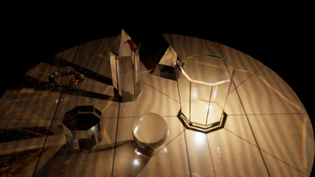
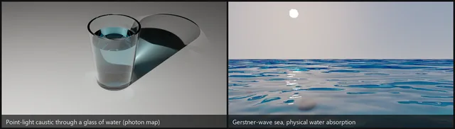
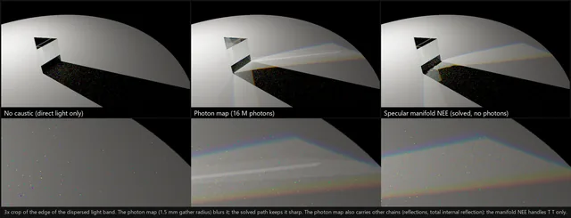
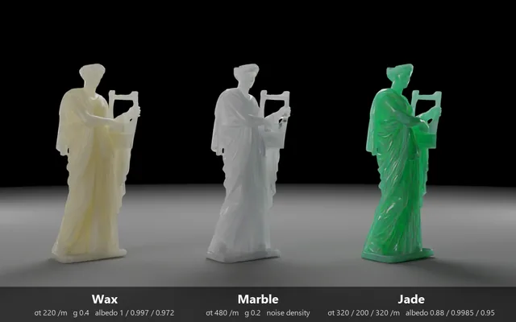

← トップに戻る
Gallery
描いた画像
自作の3Dレンダラー GoLD_rayt で描いた画像と、モデル読み込みの例です。画像をクリックすると、大きくなります。
分光レンダリング: 色を波長で計算する
RGB で近似した場合との違いを、同じシーンで描き比べました。


光の伝わり方: コースティクスと半透明
屈折した光が集まる模様や、物の内部で散乱する光を描きました。


カットグラスの中のランプ

水の入ったグラスと、波のある海

プリズムを通る光の模様

同じ彫像を、ろう・大理石・翡翠に肌の表現と、モデルの読み込み
PMX 形式のモデルを読み込み、ポーズ、表情、肌の散乱を試した例です。


キャラクターのモデルは、利用規約(再配布と商用利用は不可)に従い、個人の技術検証と自己紹介のために載せています。営利目的ではなく、このサイトでの収益化もしていません。モデル自体は配布していません。クレジットは、画像を拡大すると表示されます。